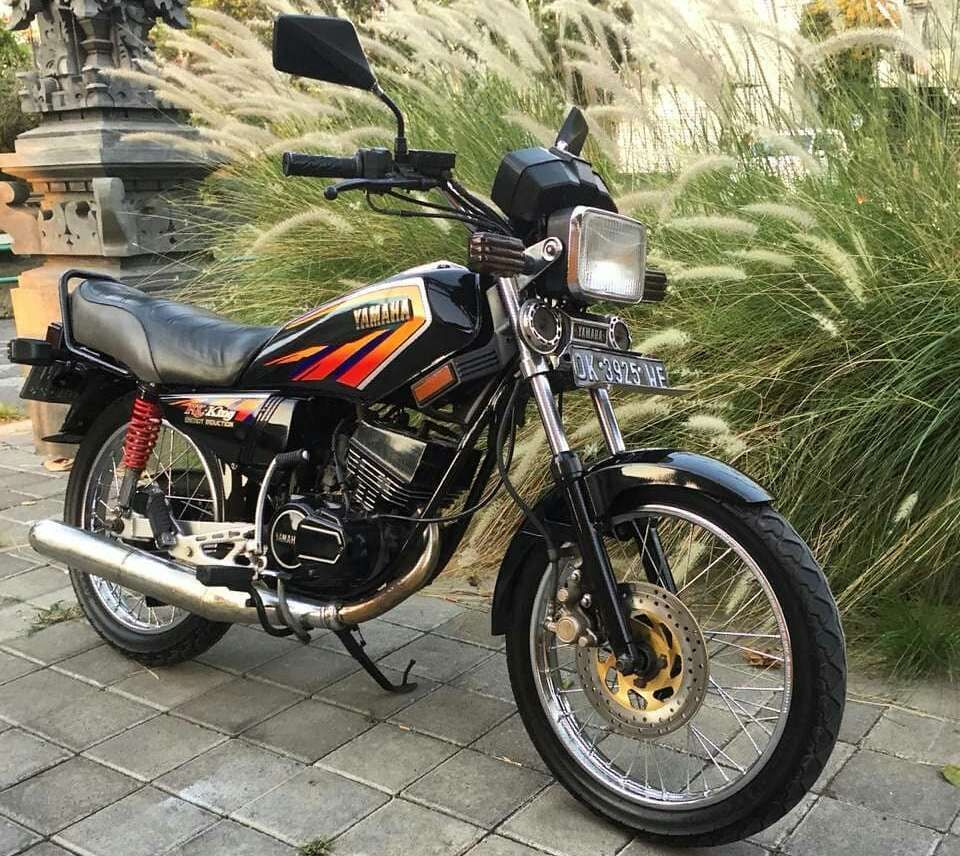
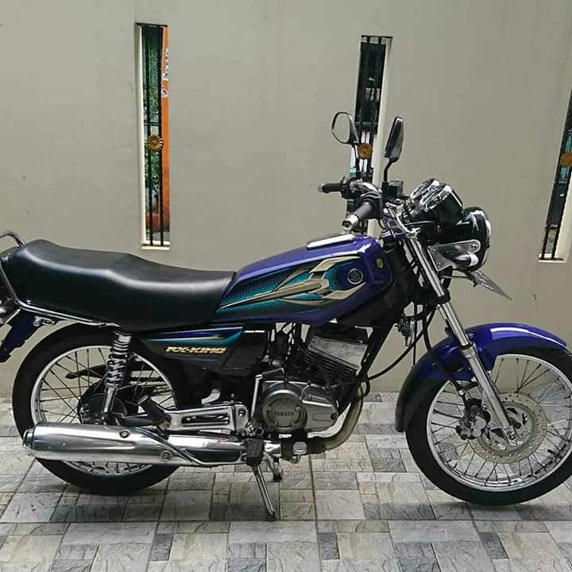
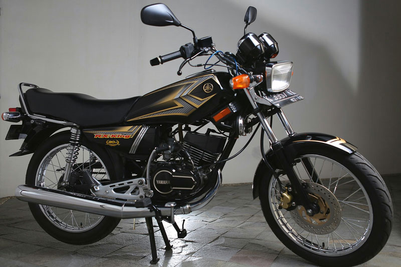

RX-KING Cobra
RX-KING Master
RX-KING Peredam
RX-KING SE Anniversry
Spesifikasi RX King Cobra RX King Cobra memiliki spesifikasi mesin 2 tak berpendingin udara dan mengusung kubikasi mesin sebesar 132 cc. Daya terbaiknya adalah sebesar 18,5 PS pada putaran 9.000 RPM, sedangkan torsi terbaiknya ada di angka 1.54 KGF.M di putaran 8.000 RPM. Pembuatan king cobra ini tahun 1982-1995.Dimensi Motor 1970 x 735 x 1065 mm Berat Kosong 100 Kg Kapasitas Tangki Bensi 9,5 Litter Ukuran Ban Depan 2.75 – 18 – 4 PR Ukuran Ban Belakang 3.00 – 18 – 4 PR Shock Depan Teleskopik Shock Belakang Swing Arm Rem Depan Cakram Double Piston Rem Belakang Tromol Tipe Mesin 2 Langkah Pendingin Udara Kapasitas Mesin 132 cc Kapasitas Oli Samping 1 Litter Sistem Pengapian CDI Kaburator VM 26 x 1 MIKUNI Transmisi 5 Kecepatan Pola Penggoperasian 1 – N -2 – 3 – 4 – 5 Tipe Kopling Manual, Basah, Multiplat.
Generasi ketiga Yamaha RX King meluncur pada tahun 2001 sampai 2006. Perbedaan dengan generasi sebelumnya adalah memiliki headlamp berbentuk oval dan dilengkapi kaliper dengan 2 piston. Selain itu, motor ini memiliki speedometer berbentuk bulat dan sticker tangki yang lebih dinamisi. Sedangkan untuk spesifikasi lainnya sama seperti Yamaha RX King Master. Alhasil kita tetap bisa menikmati performa mesin 2 tak berkapasitas 132cc pada generasi ketiga Yamaha RX King. tahun pembuatan 2006-2008.spesi
Masuk 2003 merupakan tahun yang spesial untuk para pecinta RX-King. Sebab, Yamaha memutuskan untuk menghadirkan. RX-King 20th Anniversary atau Special Edition (SE). sebagai salah satu motor RX King terbaik. Ciri khasnya adalah aksen emas di bagian ring headlamp, striping di bagian tanki, dan jok kulit warna coklat dan hitam.
